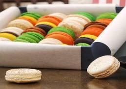

La tarta de frutas es un postre delicioso que no solo les encanta a los adultos, sino también a los más peques de la casa. Si bien hay varias tartas de frutas como la clásica tarta de manzana o la de frutilla, hoy voy a compartir con ustedes una repleta de frutas de estación para que disfruten cocinando junto a tus niños y puedas también hacer que ellos consuman fruta sin casi darse cuenta. Ingredientes
La masa básica de los cupcakes lleva harina, azúcar, levadura, huevos, manteca y leche en cantidades variables según las recetas. A partir de ahí, hay muchas variantes con otros ingredientes: chocolate, fruta, zanahoria, queso fresco, galleta, frutos secos, especias... Normalmente se mezclan los elementos secos por un lado y los líquidos por otro, se juntan y se hornean en moldes. En cuanto a las coberturas, su mundo es infinito como el Universo: vale todo con tal de que sea colorido y apetitoso.
Los macarons son una de las pastas dulces más características de Francia que con el correr del tiempo se han ido masificando en diversos países del mundo. Es así como este tipo de galletas unidas por una crema, o ganache, se han vuelto cada vez más común en las estanterías de las pastelería aportando color, textura y sabor a la oferta.